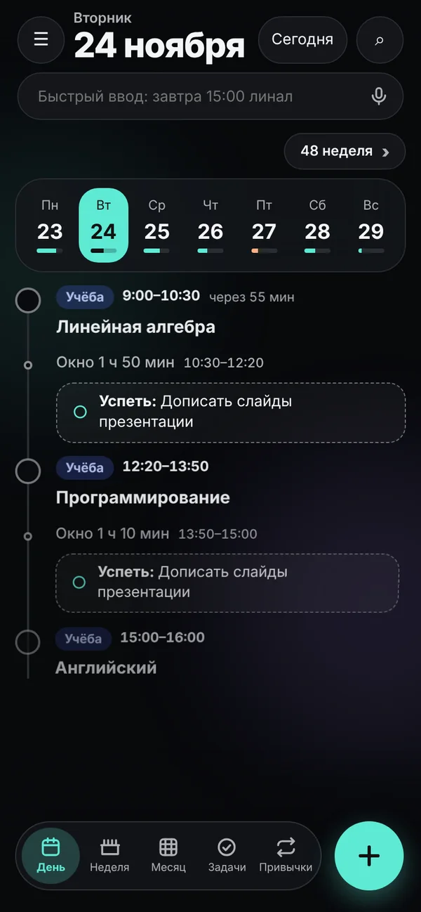
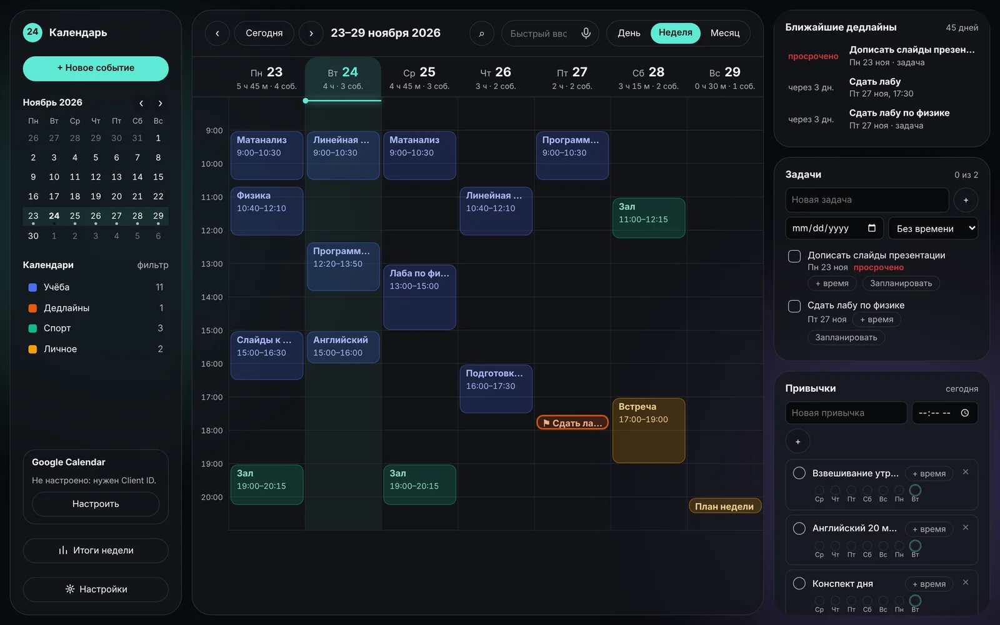

9:00–10:20
My Calendar
Пары с числителем и знаменателем, дедлайны, привычки и напоминания с номером аудитории — на телефоне и компьютере.
Android 8 и новее, файл 430 КБ. На iPhone и компьютере ничего скачивать не нужно — инструкции ниже.

10:30–11:50
Установка на Android
- Откройте эту страницу на телефоне и нажмите «Скачать для Android». Файл calendar.apk скачается в «Загрузки».
- Нажмите на скачанный файл. Если телефон спросит, разрешить ли установку из браузера, откройте настройки и включите «Разрешить из этого источника», затем вернитесь назад.
- Нажмите «Установить». Если Play Защита предупредит о неизвестном приложении, выберите «Подробнее» → «Всё равно установить»: так она реагирует на любое приложение не из Google Play.
- Откройте My Calendar. Обновлять его не придётся: новая версия подтягивается сама при запуске.
12:00–13:20
Установка на iPhone
- Откройте romainromich.github.io/calendar именно в Safari.
- Нажмите «Поделиться» (квадрат со стрелкой вверх) и выберите «На экран „Домой“», затем «Добавить».
- Запускайте календарь с иконки на экране «Домой». Уведомления на iPhone работают только так и только на iOS 16.4 и новее.
14:00–15:20
Установка на компьютер
- Откройте romainromich.github.io/calendar в Chrome, Edge или Яндекс Браузере.
- Справа в адресной строке появится значок установки — монитор со стрелкой. Нажмите его и подтвердите «Установить». Если значка нет, найдите в меню браузера пункт со словом «Установить».
- Календарь откроется в отдельном окне, появится в меню «Пуск» и на панели задач, будет работать и без интернета.
В Firefox и Safari на Mac установить нельзя, но можно пользоваться как обычным сайтом.
15:30–16:50
Код приглашения
Календарь работает и без кода: всё хранится на вашем устройстве. Код открывает то, что требует сервера:
- Уведомления при закрытом приложенииза 10 минут до пары, с аудиторией и видом занятия
- Синхронизациюмежду телефоном и компьютером
- Распознавание расписанияпо скриншоту с сайта вуза
- Откройте ссылку из приглашения — вход произойдёт сам. Или введите код в Настройки → Доступ к серверу.
- Чтобы войти на втором устройстве, на первом нажмите «Войти на другом устройстве» и введите полученный код на втором.
Код приглашения одноразовый. Не пересылайте его: другому человеку нужен свой.
17:00–18:20
Что умеет
- Расписание за минутуСкриншот, таблица Excel или файл .ics превращаются в пары на весь семестр
- Числитель и знаменательПары по нечётным и чётным неделям, номер недели всегда на виду
- Окна между парамиПоказывает свободное время и задачи, которые в него помещаются
- Быстрый вводПишете «завтра 15:00 линал» — событие создаётся само, можно голосом
- Задачи и привычкиС дедлайнами, отметками по дням и итогами недели
- Без интернетаРаботает офлайн, синхронизируется, когда сеть появится

18:30–19:50
Вопросы
Android называет приложение небезопасным
Так Android встречает любое приложение, скачанное не из Google Play. Скачивайте файл только по кнопке на этой странице: он собран и подписан автором.
Где хранятся мои данные?
На вашем устройстве. Если включить синхронизацию, на сервер уходит зашифрованная копия, а ключ от неё есть только у вас: сервер не может её прочитать.
Это бесплатно?
Да. Рекламы и платных функций нет.
Распознавание пишет, что лимит исчерпан
Каждому доступно 20 картинок в день, лимит обновляется в 03:00 по Москве. Длинную таблицу снимайте прокруткой: скриншоты склеятся в одну картинку и займут одно распознавание. Excel, CSV и .ics загружаются без ограничений.
Нашёл ошибку
Напишите в Telegram: @DontGetD1stracted. Расскажите, что делали, что ожидали и что получилось. Скриншот очень поможет.